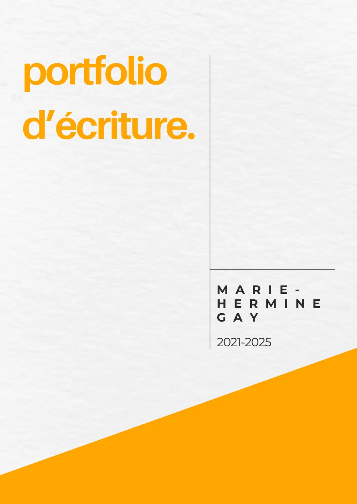

Marie Hermine Gay
Rédactrice persuasive &
chef de projets en communication.
Enchantée !
Je suis Marie-Hermine et j'aurais pu devenir architecte d'intérieur.
Finalement j'ai préféré choisir la communication et la rédaction.
Pourquoi ?
- Parce qu'un cours de rhétorique m'a fait comprendre que la communication est palpitante.
- Parce qu'un bilan de compétences m'a aidée à me lancer professionnellement dans un des essentiels de ma vie : l'écriture.
Alors après mon Master et quelques années d'expérience professionnelle, je mets ma plume et mes compétences en com au service de personnes, d'entreprises et d'organisations.
Petit bonus : je suis spécialisée en accompagnement du changement, en management et je me forme actuellement à la rédaction persuasive (ou copywriting) avec la brillante Alex Martel.
Pssst : pour ceux qui ne savent pas ce qu'est la rédaction persuasive, c'est l'art de convaincre par les mots. Stylé, non ?
Mes qualités de cœur
- Sens de l'écoute client
- Curieuse
- Rigoureuse
- Organisée
- Réactive
- Relationnelle
Mes passions
- Le Sport : course à pied, randonnée, danse.
- La photographie : paysages, noir et blanc.
- Les livres : romans, philosophie, pièces de théâtre...
- L'art : musées, théâtres, opéras.
Mes compétences
- Suite Adobe : InDesign, Photoshop, Premiere Pro, Illustrator
- Canva
- Newsletter : Brevo, Mailchimp, Substack
Je suis Watson
Ou M pour James Bond.
Ou Panoramix pour Astérix.
Ou Victoire pour Lupin
Ou la boîte à outils pour Bob le bricoleur.
Comme j’ai un petit faible pour la littérature anglaise, je reste avec Arthur Conan Doyle.
Si nous étions dans une de ses enquêtes de Sherlock, je serai son allié,
son associé de toujours, son bras droit : Watson.
Et vous, vous seriez protagoniste principal : Holmes, bien sûr.
C’est exactement la même relation que j’ai avec mes clients.
Vous êtes le personnage principal de votre activité et moi je suis l’adjuvant.
Je vous accompagne et je vous aide par mes compétences à atteindre votre quête et vos objectifs.
Je vous fais la courte échelle en quelque sorte.
Mes domaines de prédilection
Rédaction
- Article web (avec SEO): reportages, interviews, blog, journalistique;
- Article papier: reportages, interviews, billets, édito, argumentaires;
- Newsletter (Brevo, Mailchimp, Substack);
- Communiqué de presse.
Rédaction persuasive
- Description d'offre /service / produit;
- Description de l'histoire d'une entreprise;
- Page de vente
- Storytelling
Communication
- Création de visuels: affiches, kakémonos, guides, brochures, flyers;
- Content management: stratégie de contenus, rédaction de contenus éditoriaux, gestion de prestataires simples
- Réseaux sociaux (Instagram / Facebook / LinkedIn): créations éditoriales de posts, planification des posts, animation de la communauté.
- Événementiel: Organisation et gestion d'événements (réunions, concours, conventions) allant d'une dizaine de personnes à plus de 300 personnes.
Pour en savoir (et voir) plus :

Élémentaire, me diriez-vous.
Pourtant, pas si élémentaire que cela.
Je veux bien sûr parler du prix de mes prestations.
J’adapte mes tarifs en fonction des missions que j’aurai à accomplir et du temps que j’investirai pour
vous. Je ne peux pas vous donner un prix exact sans vous connaître, savoir vos besoins et comprendre
votre écosystème.
Je vous propose de nous contacter pour en parler, c’est plus simple. Et tellement plus convivial.
Pour me contacter c'est simple
De vive voix
Un appel découverte, c’est 30 minutes pour poser toutes vos questions et savoir si je peux vous aider dans votre activité.
Prendre rendez-vousOu sur mon LinkedIn
Merci et à bientôt pour un échange, un thé ou plus si affinités !